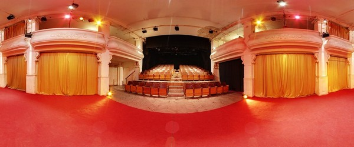

Львівський академічний духовний театр «Воскресіння»
м. Львів, пл. генерала Григоренка, 5
+38 (032) 274-13-00, 274-11-60 voskresinnia.eu
Заснований групою молодих акторів з різних міст України та режисером Ярославом Федоришиним. Характеризується пошуком виразної театральної мови і конкретної сценічної форми, відкриваючи українському глядачеві світову драматургію. У театрі поєднуються традиції психологічного театру та сучасні мистецькі форми, українська і світова драматургія.
Започаткований у 1990 році, а роком пізніше театр переїхав до будівлі, де він виступає і зараз — пасажу Ґрюнерів на площі Генерала Григоренка, 5. 1992 року на базі театру був заснований Міжнародний театральний фестиваль «Золотий лев», який на сьогоднішній день є найяскравішим театральним форумом України. У 1993 році театр отримав статус державного, а 11 березня 2010 року – академічного.
Першою виставою театру була «Чудо святого отця Миколая над Половчином» Степана Перського. Теперішній репертуар складають «Весела корчма» Шолом-Алейхема, «Провінційні анекдоти» Олександра Вампілова, «Том, Дік, Гаррі» та «Він, вона, вікно, покійник» Рея Куні, «Вишневий сад» Антона Чехова тощо. З 1996 року в репертуарі театру також є вуличні вистави – «Коли ангели спускаються на землю», «Львів то є Львів» та інші.
